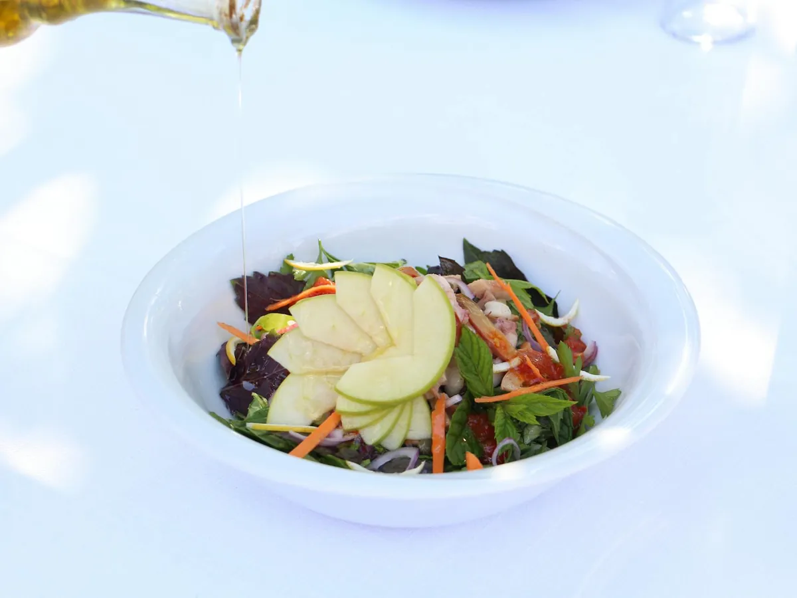

Unlock Your Energy: Master Blood Sugar Levels
Key takeaways
- Think of your blood sugar like a thermostat for your energy.
- When it's stable, you feel steady.
- Track what feels sustainable and adjust gradually.
Think of your blood sugar like a thermostat for your energy. When it's stable, you feel steady. When it spikes and crashes, you get those dreaded energy dips and mood swings. It’s not about being perfect; it’s about understanding how your body works.
My own journey taught me that focusing on whole foods, lean proteins, and healthy fats made a huge difference. I started paying attention to how different meals made me feel a couple of hours later. It wasn't always easy, and I definitely had days where I craved something sweet, but making small, consistent changes was the game-changer.
The 2-Minute Win
The next time you eat, take a moment to notice how you feel about 90 minutes later. Are you still energized, or are you feeling that familiar slump? This simple awareness is your first step to mastering your energy.
One of the biggest shifts for me was incorporating more fiber. It’s like a gentle brake for your blood sugar. Think fruits, veggies, and whole grains. This simple habit helped me avoid those post-lunch slumps and gave me more sustained energy throughout the day. For more on this, check out this related healthy tip.
Pro-Tip: Don't skip breakfast! Starting your day with a balanced meal that includes protein and healthy fats sets a more stable tone for your blood sugar all day long. Even a couple of hard-boiled eggs or a handful of nuts can make a difference.
Managing your energy is also deeply connected to other aspects of your well-being. Getting enough sleep and managing stress are crucial. When I'm stressed or sleep-deprived, my cravings for sugary snacks skyrocket, and my blood sugar goes haywire. It’s a tough cycle to break, but focusing on one area at a time can help. You can find another practical guide here.
For me, the goal isn't perfection; it's progress. It's about finding strategies that work for *my* lifestyle and help me feel my best. Understanding how food impacts my energy levels has been a huge part of that. It’s a journey, and every small step counts. Explore more guides on healthy habits to keep the momentum going.
Making informed food choices doesn't have to be complicated. Focusing on whole, unprocessed foods is a great starting point. Sometimes, the simplest ingredients can have the biggest impact. That's why I'm a big fan of incorporating quality fats, like Extra Virgin Olive Oil, into my meals. It's fantastic for cooking, dressings, and adding a healthy boost to almost anything. It’s a simple way to support your overall metabolic health. You can find some great options here.
Remember, small, consistent changes lead to big results. Don't get discouraged by setbacks; just get back on track. This is about building a sustainable way of living that makes you feel good from the inside out. For more on this, see this similar wellness insight.
To help you stay consistent, here’s a quick checklist:
Your Energy-Boosting Checklist
- Incorporate one source of fiber at each meal.
- Add a protein source to your snacks.
- Choose whole grains over refined ones when possible.
- Drink plenty of water throughout the day.
- Notice how different foods make you feel.
This is all about making choices that support your energy and well-being long-term. You've got this! For more on how to stay consistent with this, keep learning and experimenting.
Educational only — not medical advice. Disclosure: This page may contain affiliate links.More in health

healthEat for Energy: Top Anti-Inflammatory Foods to Heal Your Body
Feeling drained? Discover top anti-inflammatory foods packed with antioxidants and healthy fats to boost your energy and
Read article →Pain-Free Joints: Nutrition and Exercise Tips for a More Mobile You
Discover practical nutrition and movement strategies to improve joint comfort and mobility. Learn how simple changes can
Read article →Related posts
Eat for Energy: Top Anti-Inflammatory Foods to Heal Your Body
Feeling drained? Discover top anti-inflammatory foods packed with antioxidants and healthy fats to boost your energy and
Read article →Pain-Free Joints: Nutrition and Exercise Tips for a More Mobile You
Discover practical nutrition and movement strategies to improve joint comfort and mobility. Learn how simple changes can
Read article → health
healthWhat Foods Lower Inflammation Naturally?
Discover everyday foods that can help reduce inflammation in your body. Learn practical tips and simple ingredient swaps
Read article →